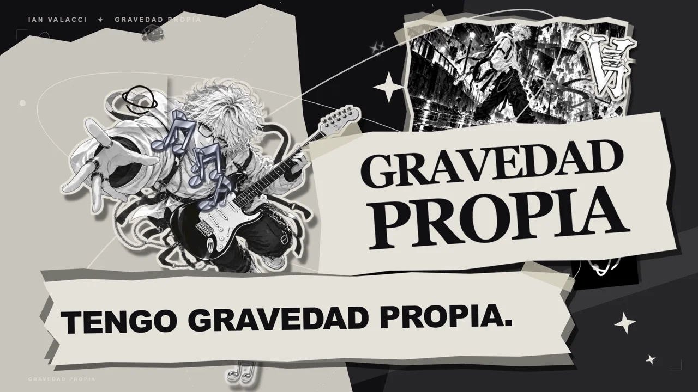

Gravedad Propia.
Ahora, tu versión.
El montaje completo de mi videoclip, sus recursos y un prompt maestro para reproducirlo o crear una nueva versión con tu canción y tu personaje.
Papel rasgado, anime, estrellas, profundidad, notas musicales y letras sincronizadas. Una base para experimentar, ampliarla con nuevas fases y darle tu dirección.
Descarga y extrae.
Necesitas el repositorio completo, no solo el prompt. Extrae el ZIP e instala Node.js LTS, versión 22 o posterior, si aún no lo tienes.
Elige tu camino.
En Windows abre INICIAR.bat: reproduce el original o prepara tu canción, recorte y fotos desde el formulario local. La primera instalación y el render llevan tiempo.
Hazlo tuyo.
Para dirigir nuevos planos, pega el prompt en una IA con acceso a la carpeta y herramientas de ejecución. Elige cambiar personaje, canción o agregar fases.
El proceso, por escrito
El prompt maestro.
Incluye la dirección visual, las correcciones que hicimos, los tiempos clave y cómo comprobar el resultado. Funciona junto con el proyecto descargado; un chat de texto por sí solo no ejecuta un render.
Leer el prompt completo
El original conserva la identidad de Ian y sus referencias. Para compartir o monetizar tu versión, utiliza música e imágenes propias o autorizadas y revisa los créditos y condiciones de los recursos.